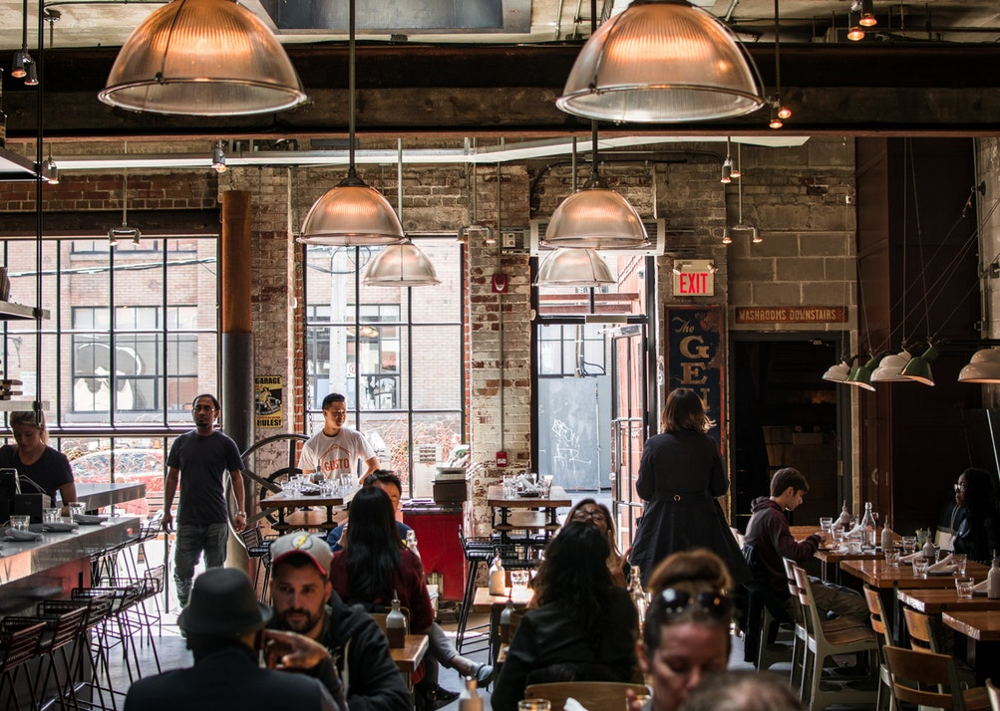

早朝6時からオープン！！
ランチタイムは、定番のパスタやカレーなどの日替わりランチがおすすめ！！
西新宿だから交通の便もよく、お集まり・ショッピングなどにも最適！
お二人だけのランチタイムにいかがですか。
街のまんなか、小さなパリの香り
Cafe de Paris
早朝6時からオープン！！
ランチタイムは、定番のパスタやカレーなどの日替わりランチがおすすめ！！
西新宿だから交通の便もよく、お集まり・ショッピングなどにも最適！
お二人だけのランチタイムにいかがですか。
街のまんなか、小さなパリの香り
お知らせ

カフェド・パリとは
西新宿にあるCafe de Parisは、朝6時から夜22時までオープン。
通勤前のモーニングから、ゆったり過ごすランチタイムまで、
どんな時間も心地よく過ごせるカフェです。
人気の「マカロンセット」や「本日のランチプレート」は、
見た目も味も楽しめる自慢のメニュー。
おしゃれで明るい店内で、日常にちょっとしたパリの風を感じてください
アクセス
店名
Cafe de Paris (カフェ・ド・パリ)
住所
〒160-0023
東京都新宿区西新宿１丁目７−３ モード学園総合校舎コクーンタワ
電話番号
03-1234-5678
営業時間
10:00～22:00 (L.O. 21:30)
定休日
不定休（年末年始を除く）
席数
店内42席
アクセス
新宿駅西口から徒歩7分、都庁前駅から徒歩3分です。